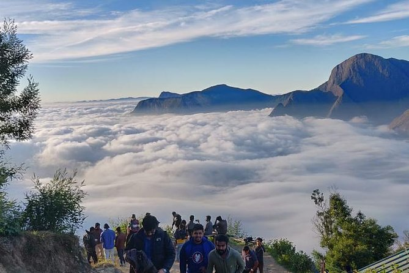
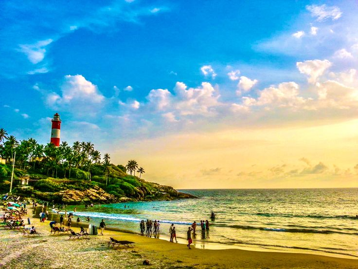
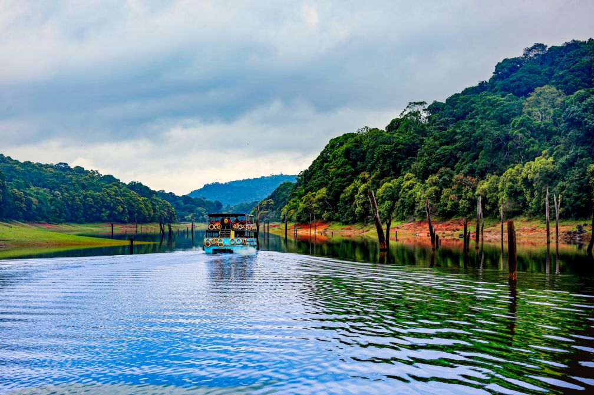
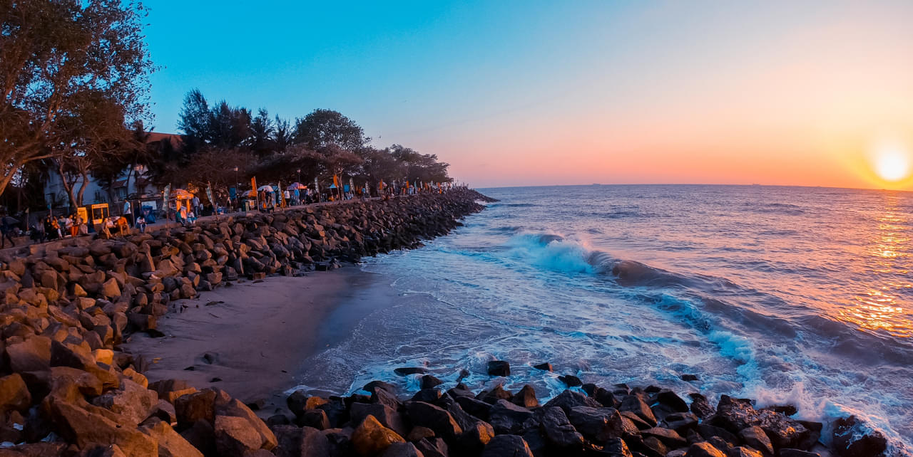

Top Places to Visit in Kerala

Alleppey (Alappuzha)
Known as the Venice of the East, Alleppey is famous for houseboat cruises along the beautiful backwaters.

Munnar
A picturesque hill station with rolling tea plantations, misty valleys, and breathtaking viewpoints.

Kovalam
A world-renowned beach destination, perfect for relaxation, sunbathing, and Ayurvedic treatments.

Thekkady (Periyar Wildlife Sanctuary)
One of India’s most famous wildlife reserves, known for elephants, tigers, and scenic boat rides.

Kochi
A vibrant port city with colonial heritage, Chinese fishing nets, spice markets, and cultural shows.